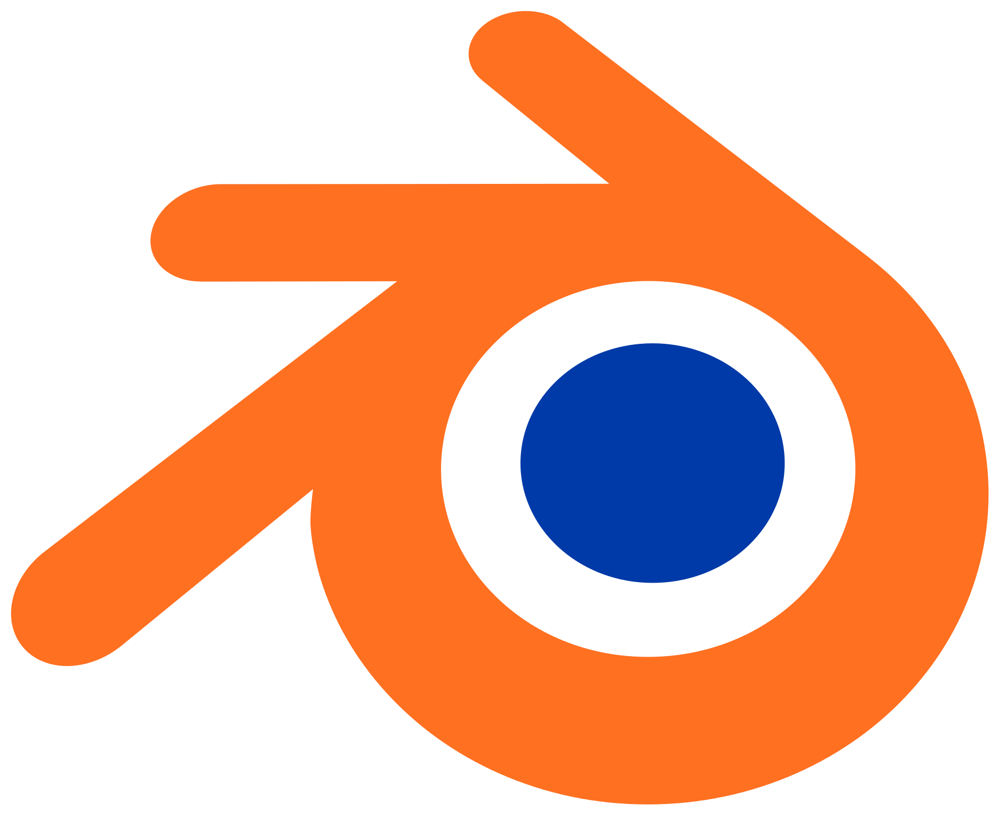

Minicursos
As inscrições iniciarão no dia 26 de junho de 2018.


Atenção, a quantidade de vagas por minicurso é limitada a 20, então corra e faça sua inscrição!

Introdução ao Blender: modelando em três dimensões
A modelagem 3D ou modelagem tridimensional é uma técnica que permite a criação de modelos, no ambiente digital, que podem ser visualizados sob qualquer ponto de vista. Seu uso é bastante abrangente e permeia campos como o da criação de personagens e cenários para filmes de animação e jogos, imagens para web design, publicidade, entre vários outros. Esse curso tem como objetivo apresentar ao aluno os conceitos dessa técnica por meio de exercícios práticos no software Blender, ensinar as principais ferramentas disponíveis nesse software e como utilizá-las para conseguir os melhores resultados.
por Paula Poiet Sampedro
Artista plástica, com bacharelado pela Universidade Federal de Mato Grosso do Sul (UFMS), possuí mestrado em imagem e som com pesquisa na área de cinema de animação 3D pela Universidade Federal de São Carlos (UFSCar). Atualmente é professora de desenho de observação na Universidade Estadual Paulista Júlio de Mesquita Filho (UNESP), onde também cursa doutorado em Mídia e Tecnologia e estudo design de jogos para realidade virtual.
Docker Container
Um container é uma imagem leve com todo o necessário para o funcionamento
de um Software. Com os containers é possível unificar o ambiente de desenvolvimento entre todos os membros de uma equipe, evitando assim o conflito entre diferentes versões de um software.
Neste minicurso, será apresentado o funcionamento dos containers Docker, bem como sua utilização básica e criação.
por Igor Neves Faustino
Estudante de ciência da computação na Universidade Tecnológica Federal do Paraná, Diretor de projetos na Haken Empresa Júnior de Ciência da Computação e entusiasta em containers.
MERN: Full Stack Javascript
Introdução ao desenvolvimento Web utilizando Node.js Express, React e MongoDB.
Ao longo do curso, será visto como criar um servidor REST e como o front-end é capaz de consumir as informações salvas, bem como o funcionamento básico de cada tecnologia. Além disso, serão apresentados alguns conceitos básicos de design web.
por Cláudia L. Poiet Sampedro
Estudante de ciência da computação da UTFPR, atual presidente da Haken Empresa Júnior de Ciência da Computação, interessada por front-end e amante de interfaces minimalistas.
por Igor Neves Faustino
Estudante de ciência da computação na Universidade Tecnológica Federal do Paraná, Diretor de projetos na Haken Empresa Júnior de Ciência da Computação e entusiasta em containers.
Virtualização
Virtualização é a técnica de separar a aplicação e sistema operacional dos componentes físicos. Uma máquina virtual possui aplicação e sistema operacional como um servidor físico, mas estes não estão vinculados ao software e podem ser disponibilizados onde for mais conveniente. A virtualização de aplicação ou apresentação permite rodá-la em um servidor ou ambiente centralizado e ser deportada para outros sistemas operacionais e hardwares.
por Augusto Dias
Técnico em manutenção e suporte em informática. Estudante de ciência da computação na Universidade Tecnológica Federal do Paraná, Diretor de marketing na Haken Empresa Júnior de Ciência da Computação.
por Luiz Arthur
Professor da UTFPR com doutorado em Ciência da Computação e certificado LPI (Linux Professional Institute).
GNU/Linux e Shell Script
Curso focado para iniciantes em computação, onde será ensinado conceitos do Sistema Operacional Linux, bem como conceito de interfaces gráficas, terminal, principais comandos do terminal e criação de scripts em Shell.
por Otávio Goes
Estudante de Bacharelado em Ciência da Computação UTFPR - CM.
por Ricardo Giacobbo
Estudante de Bacharelado em Ciência da Computação UTFPR - CM.
por Rogério Aparecido Gonçalves
Professor na Universidade Tecnológica Federal do Paraná (UTFPR), campus Campo Mourão desde 2009. É Bacharel em Informática (2006) e Mestre em Ciência da Computação (2008) pela Universidade Estadual de Maringá (UEM). Tem Doutorado em Ciência da Computação (2016) pela Universidade de São Paulo (USP) na área de Computação Paralela. Tem experiência em Ciência da Computação, tendo como principais linhas de pesquisa e interesses: Arquitetura de Computadores, Computação Paralela, Computação Heterogênea e Offloading de Código.
Desenvolvimento de Jogos
Um Motor de Jogos (Game Engine) é um conjunto de ferramentas que permite simplificar e abstrair o desenvolvimento de jogos digitais e aplicações com gráficos em tempo real. Motores de jogos tipicamente fornecem um motor gráfico para renderização gráfica 2D/3D, um motor de física para simulação de corpos, forças e tratamento de colisões, uma ferramenta de criação de animações e eventos, bem como, gerenciadores de sons, comportamentos dos personagens, serviços de rede, memória e arquivos. Os motorores permitem a construção da logica dos jogos, bem como sua própria estensão, por meio de linguagens de programação conhecidas, como C++, C# e JavaScript.
por Marcos Silvano
Professor da UTFPR com doutorado em Ciência da Computação. Possui experiência e atua principalmente nos seguintes temas: Aplicativos Móveis, Engenharia de Software e Desenvolvimento de Jogos.
Web Scraping
As principais fontes de dados para projetos de Data Science são geralmente bancos de dados, APIs, ou arquivos CSV. Entretanto, nem sempre pode-se encontrar uma fonte dados estruturada atualizada e APIs são caras ou tem limites de utilização. Para solucionar esse problema, utiliza-se a raspagem de dados (web scraping), que é uma técnica em que se extrai e estrutura informações de meios não estruturados, como HTML e PDF.
por Kaio Duarte
Estudante de Bacharelado em Ciência da Computação UTFPR - CM.
TensorFlow
TensorFlow é uma biblioteca de código aberto para aprendizado de máquina aplicável a uma ampla variedade de tarefas. É um sistema para criação e treinamento de redes neurais para detectar e decifrar padrões e correlações, análogo (mas não igual) à forma como humanos aprendem e raciocinam. Ele é usado tanto para a pesquisa quanto produção no Google, e está aos poucos substituindo seu antecessor de código proprietário, DistBelief. TensorFlow foi desenvolvido pela equipe Google Brain para uso interno na empresa. Foi lançado sob a licença de código aberto Apache 2.0 em 9 de novembro de 2015.
por Juliano Foleiss
Possui graduação em ciência da computacão pela Universidade Estadual de Maringá e mestrado em Ciência da Computação pela Universidade Estadual de Maringá. Atualmente é professor da Universidade Tecnológica Federal do Paraná.